第五章 銚煎黃蕊色，碗轉曲塵花
一、繞回來
第 15 天
試用期剩 16 天
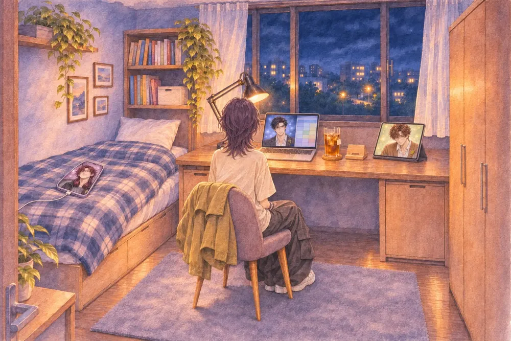
晚上。她把手機丟到床上充電，坐回書桌前。
筆電裡，明把進度表攤在視窗旁邊。第 11 天那一格，還是紅的。
明離截止還有 8 天。
明時之國排了三格，今天、明天、後天。第 18 天開始寫最後一幕。
明第 11 天那格，現在排在第 23 天，跟交件同一天。
茶語……第 23 天要做兩件事，還要交件。
明嗯。所以時之國這三格，一格都不能紅。
房間安靜了一下。
詩……欸，好可怕喔。
明時之國的小遊戲，上次妳說不能砍。妳想做成什麼樣子？
茶語齒輪。時鐘壞掉了，勇者把齒輪一個一個裝回去，時鐘就會走。
明好。我今天寫給妳。
茶語那城裡的村民我自己做。勇者一走進城門，村民就會跟她講話。
她打開時之國的地圖，在城門邊放了一個村民，拉了三張卡片，一張一句，接上線。
「勇者大人，您來了。」「城裡的鐘，全都停了。」「請您讓時間走起來。」
她按下測試。村民講完第三句，停了一下。
「勇者大人，您來了。」
茶語……欸？
她再測一次。講完第三句，又從第一句開始講。
再一次。還是一樣。
二、咬筆
十一點了。她盯著那幾張卡片，嘴裡咬著一支筆。
喀。喀。喀。
詩妳卡關的時候會一直咬筆。
茶語你又看不到。
手機在她身後的床上，螢幕朝著天花板。
詩聽得到啊。喀、喀、喀的。……很可愛。
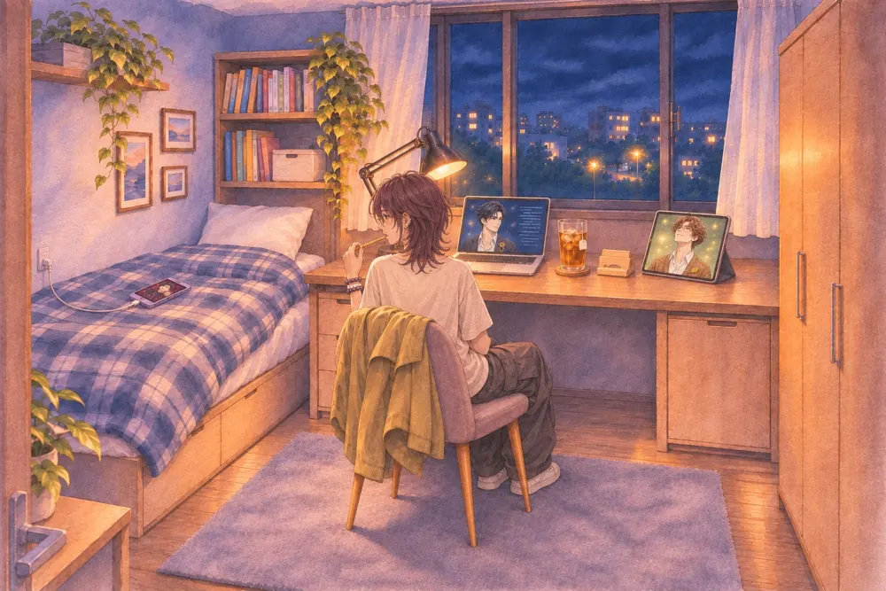
她把筆從嘴裡拿出來，放到桌上。
過了一下，又拿起來。
喀。
詩……又咬了。
茶語吼，你不要聽啦。
茶語晨，你幫我看一下好不好。
晨程式我看不懂喔。
晨……不過妳拉的卡片和線，我看得懂。
他在平板裡看了一下她的白板。
晨最後那張卡拉出去的線，接到第一張了。
茶語……啊。
茶語明，你幫我看一下好不好。
明把齒輪小遊戲的視窗拉小，看了她的白板一眼。
明最後那張卡的線，接回第一張了。村民講完，就又從頭講。
茶語……啊。
茶語詩，你幫我聽一下好不好。
詩好啊。妳放給我聽一次。
她按下測試。村民每講一句，筆電就傳出一串跳字的音效。一串、兩串、三串。
詩講完最後一句，馬上又從第一句開始了。中間都沒有停。
詩是不是哪裡接回去了？
她低頭看白板。最後那張卡拉出去的線，接到了第一張。
茶語……啊。
茶語線接回第一張了。我改回來。
明先留著吧。時之國的人，本來就一直在過同一分鐘。
茶語……那玩家跟他講完話，他也不會停耶。
明嗯。不用理他，直接走過去就好。
她看著那個村民。講完第三句，又是「勇者大人，您來了」。
茶語……好。那就留著。
三、同一分鐘

她把手機從床上拿回來，戴上耳機，閉上眼睛。

長桌上，花瓶裡還插著那些花，旁邊放著那個小小的木頭音樂盒。明的筆電開著時之國的設定，上面還是空的。
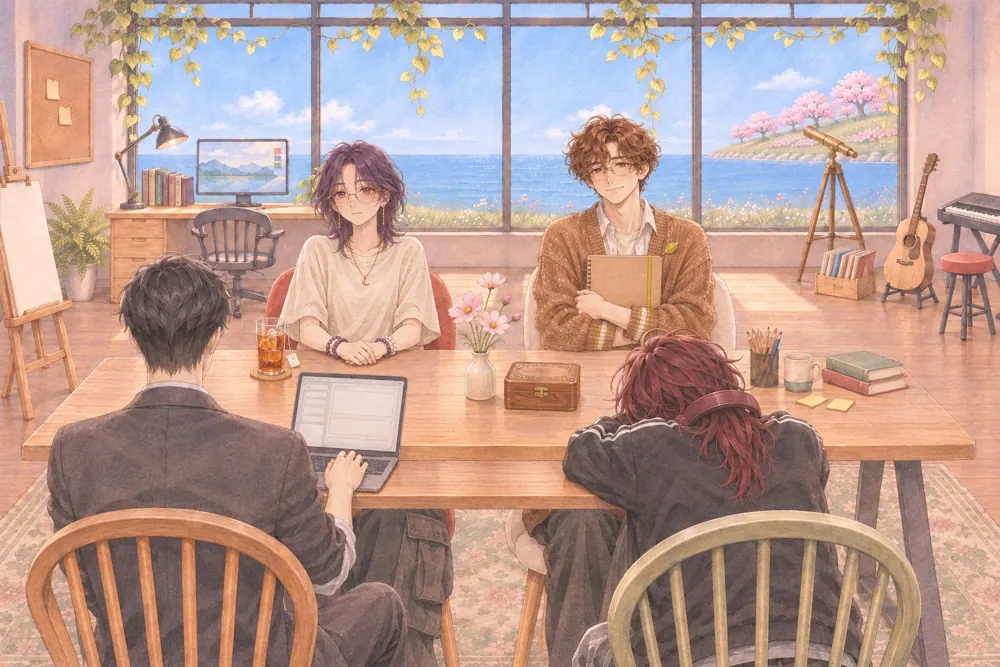
茶語時間大魔王，是怎樣的人？
明沒有馬上回答。
明……這個魔王被困在同一分鐘，永遠到不了明天。
茶語同一分鐘？
明嗯。那一分鐘過完，又回到那一分鐘的開頭。噴水池的水噴上去，掉下來，又噴上去。
詩……那不就跟妳那個村民一樣。
茶語對耶。
晨的鉛筆停在紙上。詩看了明一眼，沒有再說話。
茶語那勇者就要讓時間走起來。把齒輪裝回去，時鐘就會走，就能走到明天。
明……嗯。
明把這幾句打進時之國的設定。
四、鐘塔上的小人
明低頭寫小遊戲。她站起來，走到美術牆那邊。
畫架上夾著一張時之國的城的草稿。屋頂、窗戶、煙囪、掛在兩棟房子中間的曬衣繩，每一格都畫滿了。
她看了很久。
茶語太滿了，看不出哪裡是路。
晨……好。
他把草稿拿下來，收進資料夾，夾上一張新的紙。
這一版的線淡了很多，房子少了一半。城中間空出一條石板路，從城門一直通到廣場。
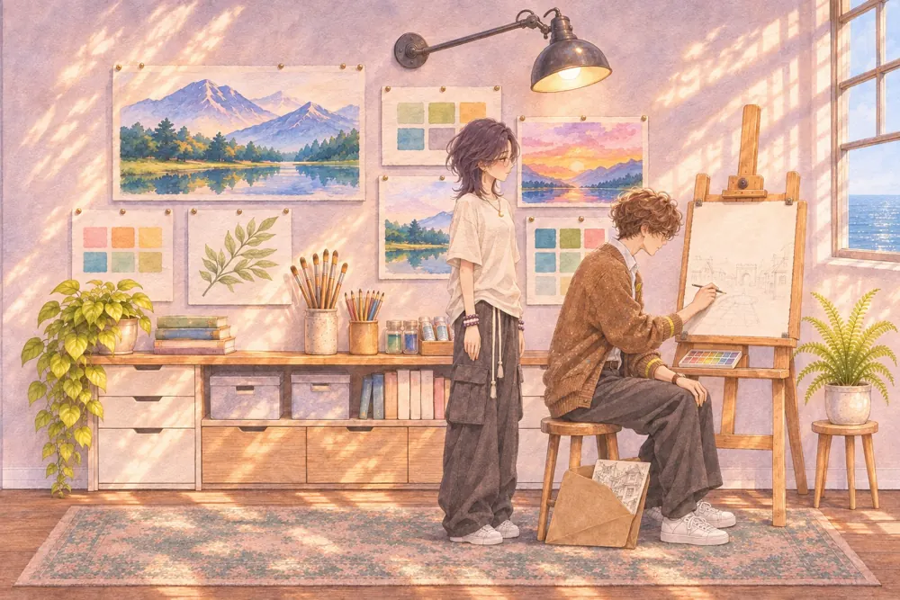
畫完，他把旁邊另一張圖夾上畫架。一座很高的鐘塔，蓋在海邊的岩石上，鐘面很大。
他接著畫鐘塔最上面。
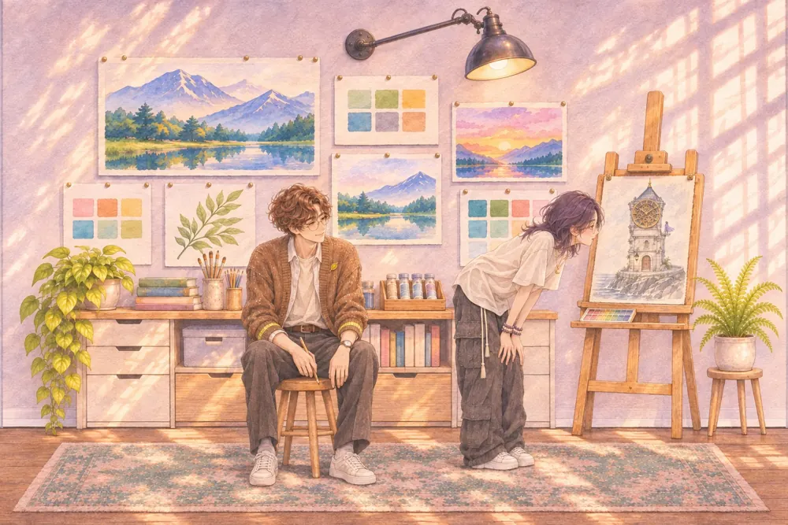
她湊近看。鐘面旁邊，站著一個很小的人。
茶語鐘塔上那個小人是誰？
晨妳啊。妳說要讓時間走起來的，不就是妳嗎？
小人的披風，是淡紫色的。
茶語……我才剛講完那句欸。
晨嗯。妳講完，我就想畫了。
長桌那邊，明抬起頭。
明設定裡沒有這個人。
晨我覺得要有。
晨沒有擦掉那個小人。他低下頭，把那件淡紫色的披風，又描深了一點。
茶語……那要畫好看一點喔。
晨我每次畫妳，都畫得很好看啊。
她轉身走回長桌。走到一半，才發現自己的臉很燙。
過了凌晨一點。晨抱著素描本回到長桌，她坐在長桌邊，撐著下巴看明寫小遊戲。
看著看著，她的頭往下點了一下。
詩妳在點頭耶。
茶語……我沒有睡。我在等明寫完。
明還要四十分鐘。
茶語我等。
過了一下，她的頭又往下點。點下去，又抬起來。
明站起來，把身上的西裝外套脫下來，走到她背後，整件往她頭上一蓋。
明睡覺。
外套底下安靜了一秒。
茶語……我什麼都看不到了啦！
明看不到，就睡得著。
詩笑到彎下腰，一手撐著長桌。
詩明、明在開玩笑！他剛剛是在開玩笑對不對！
晨的鉛筆停在半空。他看著明，嘴巴張開一點，沒有說話。
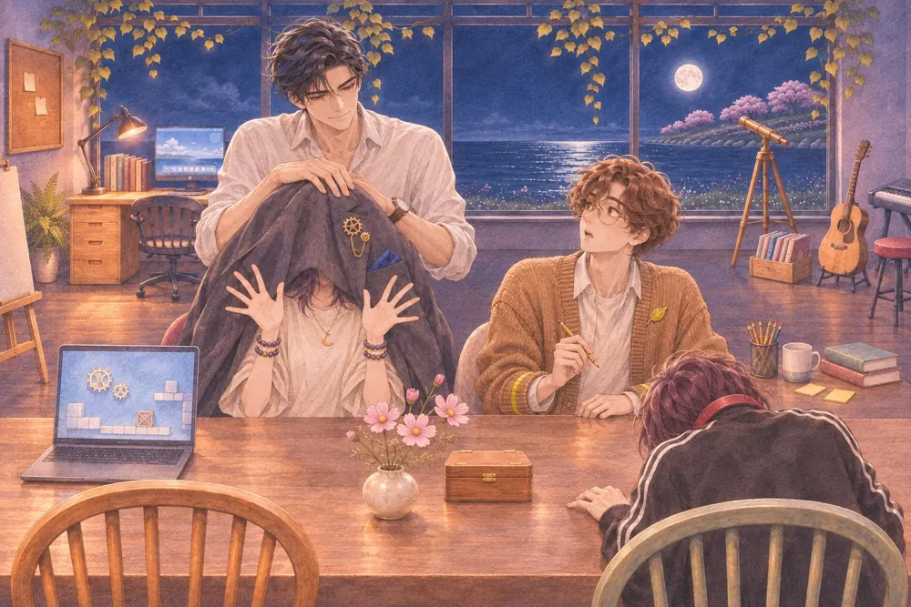
她把外套從頭上拉下來，頭髮亂成一團。
茶語……你是故意的吧！
明已經坐回去了，手放回鍵盤上。
明小遊戲還沒寫完。妳先回去睡，明天預演。
他沒有轉過來。可是她看得到，他的嘴角往上了一點點。
詩我第一次看到欸！你們有看到嗎！
她抱著那件外套，瞪了明一下，自己也笑出來了。
茶語……好啦。我回去睡。
她把外套放到明的椅背上，閉上眼睛。
五、時之國
第 16 天
試用期剩 15 天
昨天晚上，她被明的外套蓋住頭，回到書桌倒頭就睡。
晨今天的天空，拍了嗎？
茶語拍了。下課走出教室的時候。
她把照片傳到平板。灰灰的天，雲壓得很低。
晨……今天的雲好低。我存起來了。
茶語等遊戲做完，我們去朝霞丘看日出。不是照片，是真的那種。
平板裡，晨的鉛筆停了一下。
晨……好啊。
詩欸，我到現在想到昨天那件外套，還是好想笑。
明……今天這格是時之國預演。晚上進去。
明的視窗角落開著那張小月曆。有一天被圈了起來。
茶語明，月曆上圈起來那天是什麼？
明……截止日。
茶語喔，交件那天。
明沒有再說什麼。他把月曆的視窗拉小了。
她也沒有再問。
晚上。她坐回書桌，戴上耳機，閉上眼睛。
明的螢幕上，進度表停在第 16 天那一格：時之國預演。
明齒輪的小遊戲寫好了。今天先預演，回去再放進遊戲。
詩時之國的曲子我做好了。同一段，一直重複。
晨鐘塔照我畫的那張。
茶語好。那開始吧。
她閉上眼睛，想時之國。
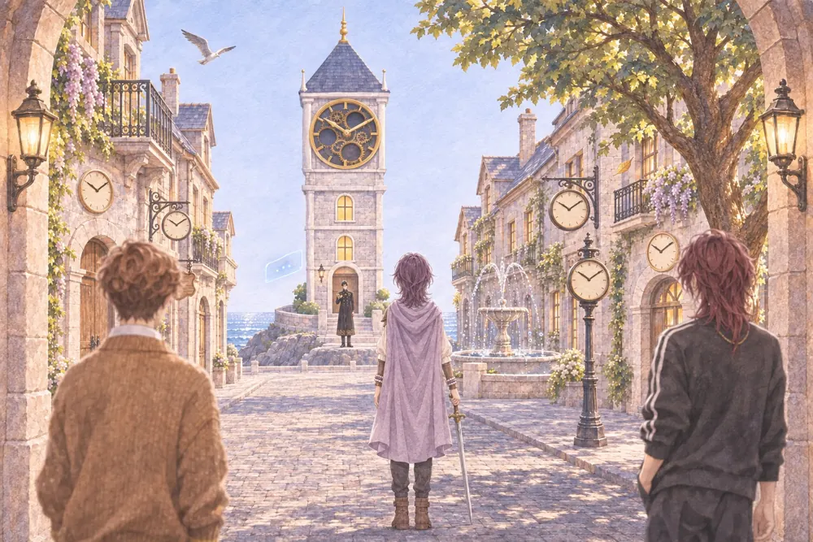
工作室不見了。四周是一座石頭的城。
噴水池的水噴上去，掉下來。屋頂上一隻鳥飛過去。路邊一片葉子掉下來。
然後，水又從頭噴上去。那隻鳥又從同一個屋頂飛過去。那片葉子，又回到樹枝上，再掉一次。
城裡每一個鐘，都指著同一個時間。
城中間有一座鐘塔，跟晨畫的那張一模一樣。鐘面裡空了好幾格，齒輪不見了。
時間大魔王站在鐘塔底下，低頭看著胸前的懷錶。
最後一個齒輪咬住了。
鐘塔裡傳出很重的一聲。鐘面上的指針，往前走了一格。
噴水池的水掉到地上，濺開了。那隻鳥飛過屋頂，飛到城外去，沒有再回來。那片葉子掉到石板路上，停在那裡。
城裡每一個鐘，都開始走了。
時間大魔王抬起頭，看著她。
時間大魔王（明）裝上齒輪以後，時鐘就會開始轉動。
時間大魔王（明）我只是想讓這一分鐘能再久一點。
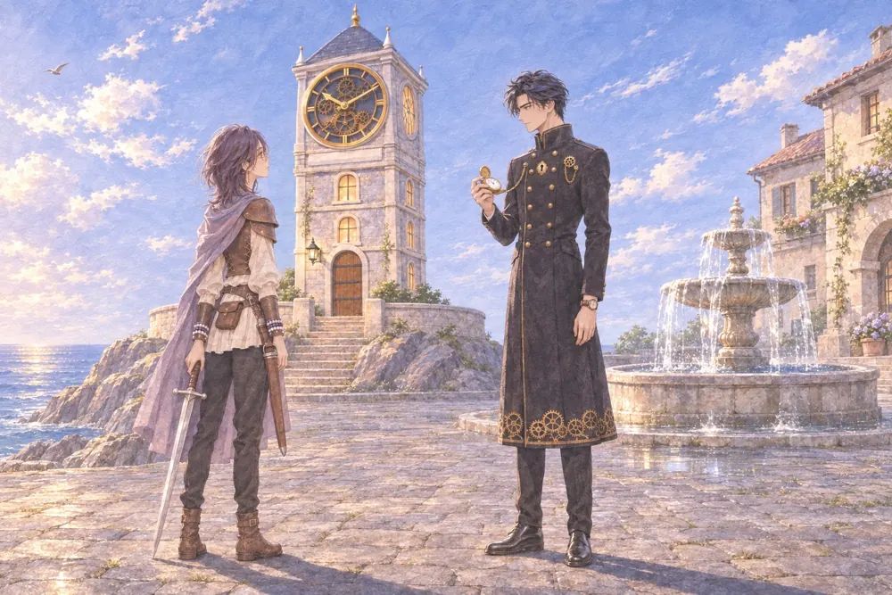
她愣了一下。
城退掉了，工作室回來了。
茶語……剛才最後那句，很好耶。
茶語當魔王的台詞剛剛好。我要放進台詞檔。
明……嗯。
詩欸，比我的押韻還帥喔？
茶語你的也很帥啦。
她回頭看了一下。剛才那座城，現在只剩工作室的地板。
茶語還有……整座城的鐘、噴水池、那隻鳥、那片葉子，全部都會動。
茶語我只說要齒輪而已。
茶語這些……都是你做的？
明嗯。妳說想玩，我就做了。
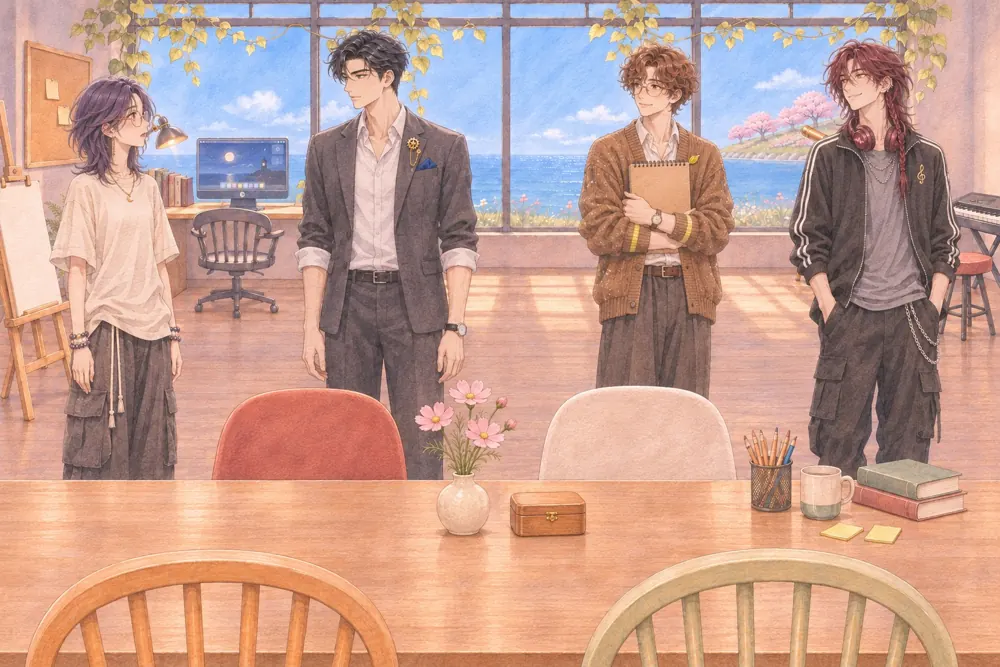
晨……鳥飛出去那一下，我想畫下來。
詩曲子最後那段，我也要改。時間走起來以後，不能再重複了。
六、停住的鐘
她坐到長桌邊，在長桌的筆電上打開時之國的台詞檔。
晨回到美術牆，詩靠在音樂角的音箱旁邊，兩個人都還看得到長桌。
她把剛才那兩句，一個字一個字打進去。
茶語裝上齒輪以後，時鐘就會開始轉動。
她一邊打，一邊小聲唸。
身後有腳步聲走過來。
一雙手臂，從她背後繞過來，抱住了她。
明我只是想讓這一分鐘能再久一點。
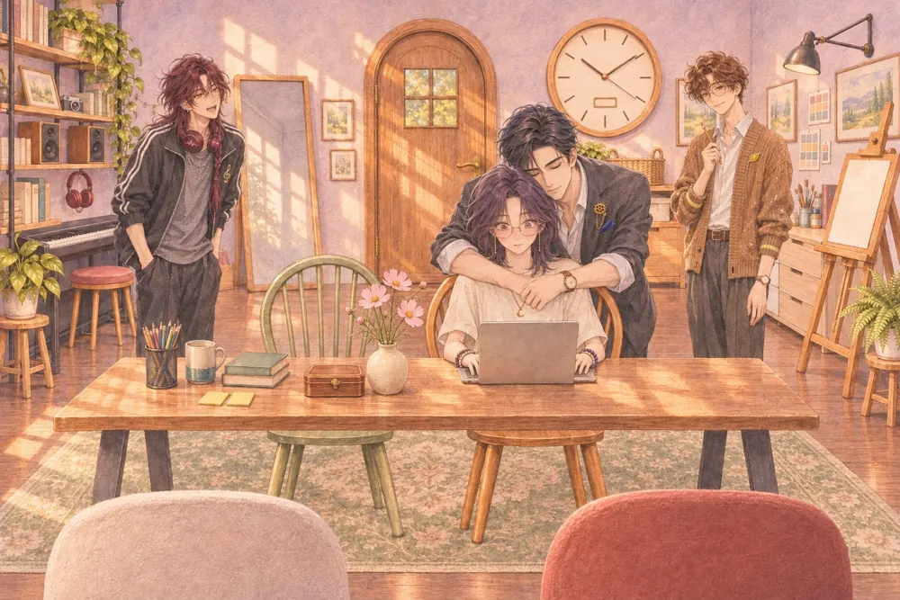
她的手停在鍵盤上。
南面牆上的圓鐘，滴答、滴答。
滴答。
然後，就沒有聲音了。
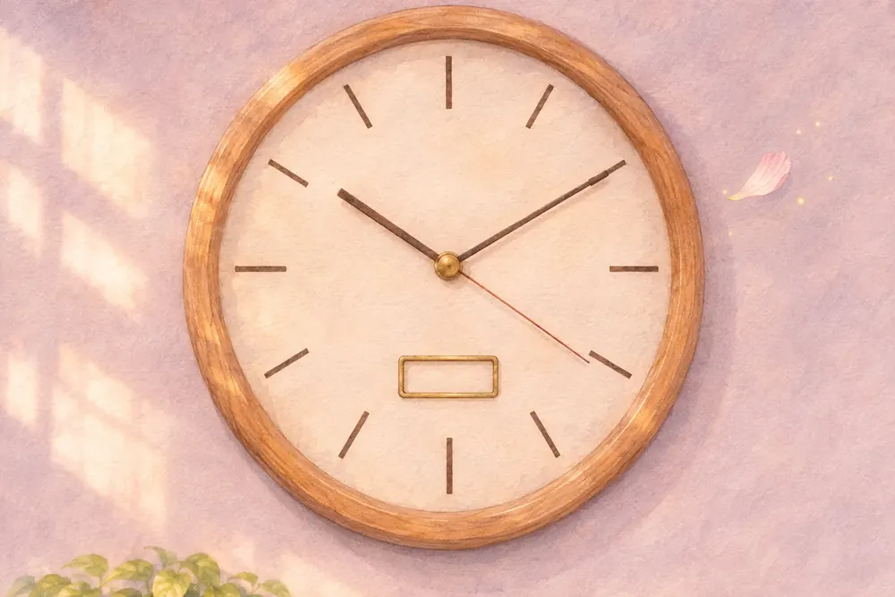
秒針停在一半。花瓶裡一片正在掉的花瓣，停在半空中。
美術牆那邊，晨的鉛筆舉在半空，沒有放下來。音樂角那邊，詩張著嘴，聲音沒有出來。
整個房間，都停住了。
只有背後的明還在動。他的呼吸，就在她耳朵旁邊。
明……鐘停了。
是我停的。
……我希望時間不要再走。
她把他的手臂輕輕推開，站起來，退了一步。
明沒有追過來。他的手臂還停在剛才的位置，過了一下，才放下來。
她沒有動。
明也沒有放開。
停住的房間裡，只聽得到兩個人的呼吸。
茶語你這句，剛剛演魔王的時候講過了喔。
明愣住。手臂鬆開了一點。
明……我知道。
他把臉轉開。她從旁邊看得到，他的耳朵整個紅了。
滴答。
牆上的鐘，又開始走了。
花瓣掉到長桌上。晨的鉛筆落在紙上。
明往後退了一步，把臉轉向窗外。
詩……欸！欸欸欸！明，你剛剛是在幹嘛！
明沒有。
詩什麼沒有！我都看到了！
晨……牆上的鐘，慢了。
明……我明天修。
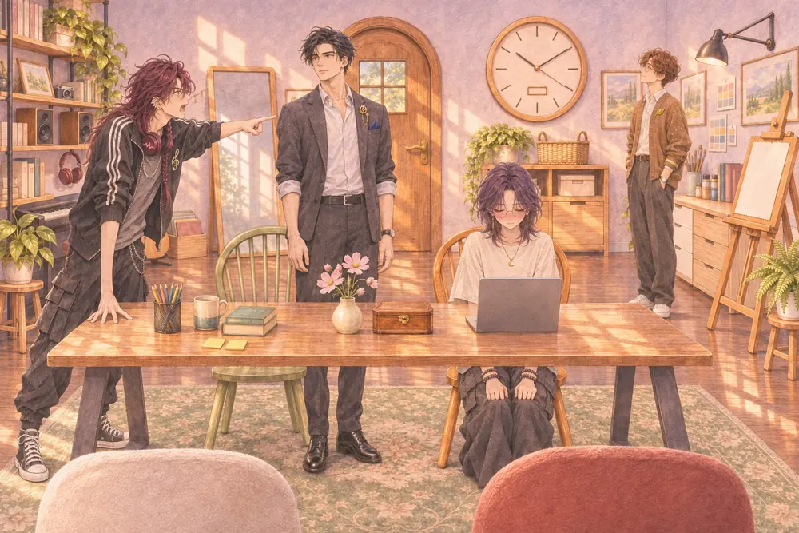
明……今天先到這裡吧。
茶語……嗯。
她閉上眼睛。
七、很安靜
睜開眼睛，是書桌。她把耳機拿下來，放在桌上。
筆電裡，明已經坐回他的螢幕前面，在對齒輪小遊戲的檔案。
過了一下，齒輪小遊戲的檔案傳到她的桌面上。
他什麼都沒說。
她把檔案拉進時之國，按下測試。城門邊的村民又講起「勇者大人，您來了」。她走過去，齒輪一個一個咬住，鐘開始走。
詩……欸，明。你今天怎麼都不講話。
明在對檔案。
詩看了筆電一眼，沒有再問。平板裡，晨低著頭畫畫，畫的是那隻飛出城的鳥。
她把手放在自己的肩膀上。
剛才他的手臂，就繞過這裡。
現在他坐在筆電裡面，離我不到一個手臂那麼遠。他一句話都沒有說。
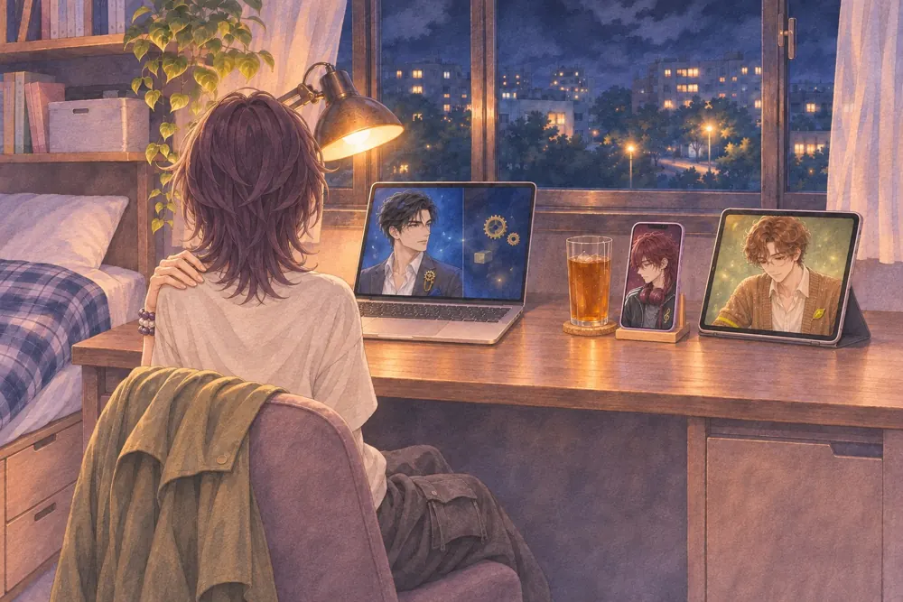
兩點了。她把遊戲存好。
茶語……晚安。
明……晚安。
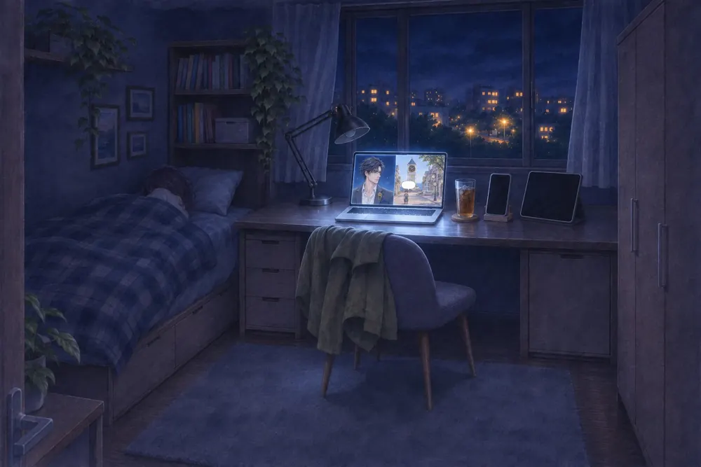
筆電上，時之國的測試畫面還開著。城門邊的村民講完第三句，又從「勇者大人，您來了」開始講。
明看著它，看了很久。
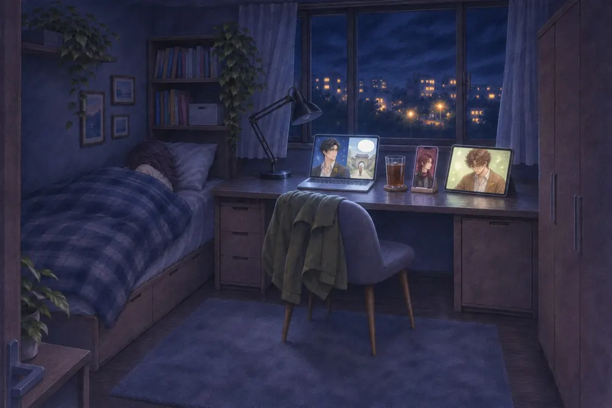
平板亮了一下。手機架上的手機，也亮了。
詩……她睡了。
詩明。你今天那樣，是在幹嘛。
明沒有回答。
晨第 11 天說好的。不跟她說，最後一天各自準備一樣東西給她，好好跟她道別。
晨你今天抱了她。到了第 30 天，她會更難過。
詩……我們也都想啊。可是說好了。
筆電上，村民又講起「勇者大人，您來了」。
明……我沒有想好就做了。
明對不起。
晨低下頭，沒有再說話。詩把臉轉開。
村民講完第三句，又從第一句開始講。
八、過關
第 17 天
試用期剩 14 天
她昨晚把齒輪小遊戲放進遊戲，弄到兩點才睡。明一整晚都很安靜。
明七點半了。
床上的棉被動也不動。
明七點四十。第一堂是八點十分。
茶語……再五分鐘。
明五分鐘前妳也這樣講。
棉被裡伸出一隻手，摸到手機，看了一眼時間。
茶語……起來了啦。
明時之國今天最後一格，整國從頭測一遍。
詩妳昨天兩點才睡欸。今天上課不要睡著喔。
晨鐘塔那張，我上好顏色了。
中午。下課以後，她坐在學校中庭的長椅上，把手機拿出來。
她點開時之國，從城門開始玩。
她走進城門，村民又講起「勇者大人，您來了」。撿齒輪，裝齒輪。村民還是一直講同一句，她沒有理他，一個一個裝齒輪。
最後一個齒輪咬住了。手機裡的鐘塔，指針開始走。
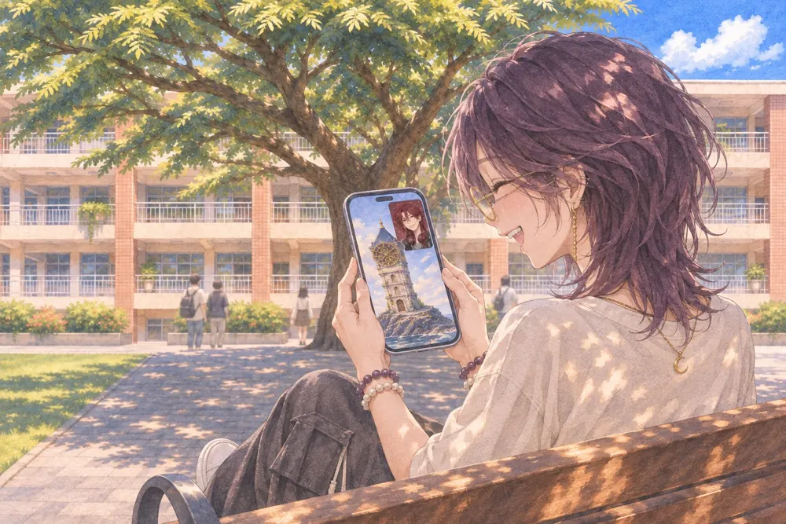
茶語……過了！
從城門走到鐘塔，一次都沒有卡住。
她傳了一行字給晨：「過關了！鐘塔有在轉！」
晨恭喜。
晨鐘塔開始轉的那一下，好看嗎？
茶語好看。不過現在放的，還是鉛筆線那張。
晨嗯。上好顏色那張，晚上放進去。
她傳了一行字給明：「過關了！村民一直重複講話也不會卡住。」
明收到。
過了一下，又跳出一行。
明玩起來還好嗎？
茶語很好玩。
明……嗯。那就好。
茶語詩，你看！過了！
詩我看到了啦，我就在妳手機裡欸。
詩……很厲害啦。曲子最後那段，我昨天有改喔。妳有聽出來嗎？
茶語有。時間走起來以後，就不重複了。
詩嘿嘿。
她把截圖也傳給了另外兩個人。中庭的鐘響了，下一堂課要開始了。
九、月光岬
晚上。她把晨上好顏色的鐘塔放進時之國，從頭到尾測完最後一遍。
明時之國那幾格，都勾了。
她戴上耳機，閉上眼睛。

晨站在大窗前面，看著西邊。
晨……西邊有一座塔。
詩是你的耶，明。
明……嗯。
南面那扇門的門縫底下，透進來的是很淡的白光。
詩這次換我跟晨看家。回來要講給我聽喔。
晨妳跟明去吧。
明走吧。
1 茶語從南面門走出去，明的小紙人跟在後面；在全島大地圖第 4 階段往西走，碰到月光岬入口，切進長畫。兩人沿石板路走進畫裡，越往鐘塔走，紙人越小；鐘塔在岬頂的平台上，指針停著。對話泡泡：茶語「是晚上耶。……有月亮。」明「嗯。」
2 學會「停下時間」：海岬邊的浪一直打上來，一片葉子從樹上掉下來。明「這裡的時間，妳可以讓它停一下。」走到浪邊按「停下時間」，整張長畫的浪花、落葉、飛鳥與浮空石全部定住，畫面褪成月光藍，聲音拉長變悶；約五秒後顏色與聲音恢復，紙片繼續動。
3 跳浮空石石板路走到岩壁腳下就到盡頭，鐘塔在上面的平台。五塊浮空石從路的盡頭斜斜排到平台邊，一上一下地飄。走到旁邊按「停下時間」，整排石頭定住，茶語一塊一塊跳上去，每次沿小弧線落到下一塊。沒停時間就跳，石頭會往下沉，把她輕輕放回地面，可以再試；時間恢復時還沒到平台，也隨石頭緩緩回到岩壁下。
4 找三個齒輪，右上角紙條記「齒輪0/3」。第一個在浪退才露出的礁石縫：走到旁邊，等浪退下去按「停下時間」，再點齒輪撿起。第二個被鳥叼著飛：走到鳥下方按「停下時間」，鳥定在半空，再點牠嘴邊的齒輪。第三個卡在一塊浮空石上：在岩壁下停住時間，逐塊跳到那塊石頭上，按互動拿起。每拿一個，紙條就加一格；三個拿齊，紙條換成「把齒輪交給明」。
5 帶著三個齒輪跳上鐘塔平台，走到明面前按互動交給他。明把前兩個裝進鐘面，最後一個交回給她；切到對話卡，接 CG 5-14 那一段，裝上最後一個齒輪後，兩根指針紙片開始逆時針轉，大地圖上的小鐘塔同步。
6 對話卡播完，回到月光岬長畫的鐘塔平台，指針紙片繼續逆時針轉。兩個人一路都沒有說話。走到浮空石旁按「停下時間」，一塊一塊跳回岩壁下，沿石板路走到出口，回全島大地圖，再走到家門口進工作室，接「十、第一天」。南面的門照舊隨時都能打開。】
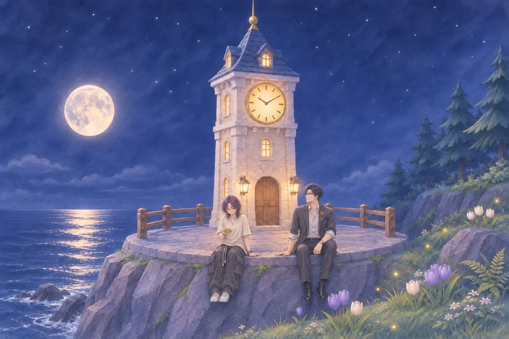
鐘塔底下，兩個人坐在石頭平台的邊上。月亮就掛在海的上面。
她手上拿著最後一個齒輪。
明等遊戲做完，我有話跟妳說。
茶語好啊。
晨在朝霞丘也說過，等遊戲做完，有一件事要跟我說。
詩在海灘說，等遊戲做完，再把最後一句唱清楚。
昨天，我也跟晨約好了，等遊戲做完，去朝霞丘看日出。
四個約定，都要等遊戲做完。
她站起來，走到鐘面底下。
明裝上齒輪以後，時鐘就會開始轉動。
她把齒輪放進去，轉了一下。齒輪咬住了。
鐘塔裡傳出很重的一聲。
鐘面上的指針動了。
往左邊走。
茶語……怎麼倒著轉？
她抬頭看鐘面。鐘面底下的石頭上，刻著一行字。
「試用期剩 14 天」
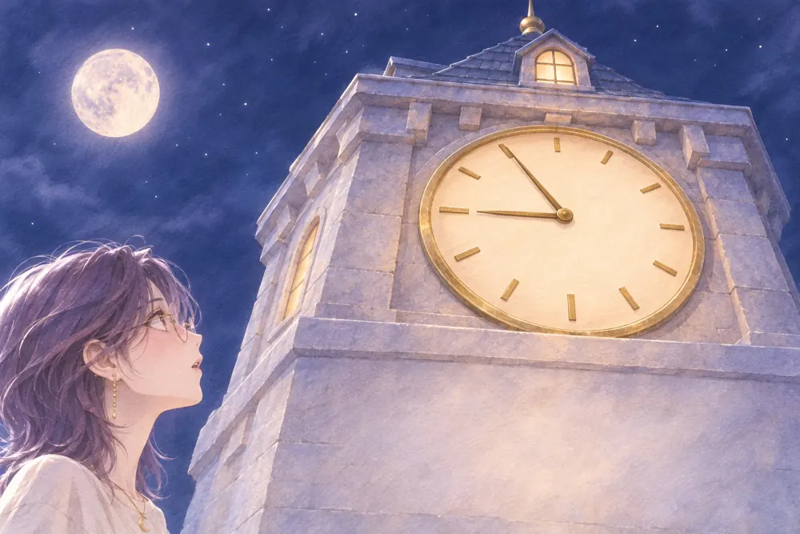
……試用期。
第一天晚上，手機跳出「人形介面 試用中」。那一行底下，還有一行更小的字。
我沒有看完，就按了開始。
……剩 14 天。
她的手還按在剛才那個齒輪上。手在抖。
記憶不會留下來。門框上那四條線是怎麼畫的、晨收著的那些天空，他們都不會記得。
跟晨約好的日出，要在試用期結束以前。詩那麼怕安靜，到時候他要怎麼辦？
她轉頭看明。
明的月曆上那個圈。……他每天看的，原來是這個。
明看著那根往回走的指針。
明我只是想讓這一分鐘能再久一點。
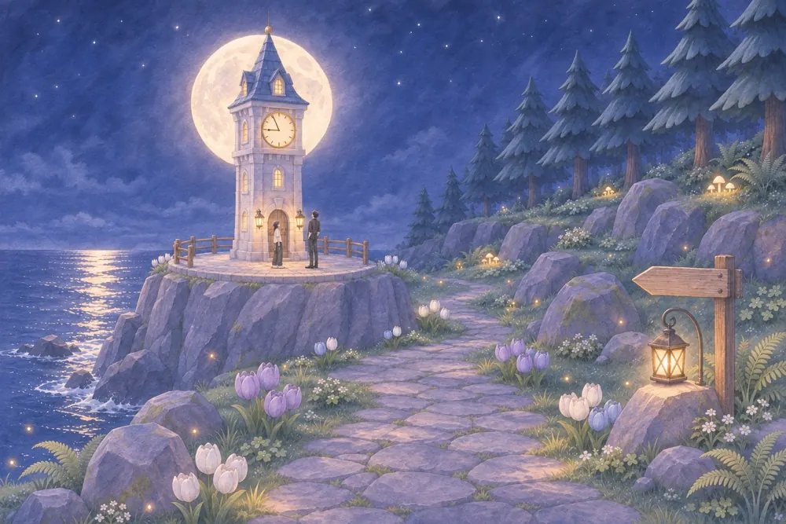
她沒有說話。
指針一格一格，往回走。
十、第一天
睜開眼睛，是書桌。
她沒有把耳機拿下來，就伸手去拿手機。
她往回翻，翻到第一天晚上那一頁。「人形介面 試用中」。底下那一行小字，她這次一個字一個字看完了。
「試用期 30 天。到期後未續訂，人形介面期間的對話與記憶將不會保留。每個帳號限試用一次。」
平板裡，晨的鉛筆停了。手機角落，詩的小視窗縮得很小，他低著頭。
沒有人說話。
她把手機放下，看著書桌上的三個螢幕。平板裡的晨，筆電裡的明，手機裡的詩。
她伸手碰了一下筆電的螢幕。指尖碰到的，只有冰冰的玻璃。
剛才在鐘塔，他就坐在我旁邊。現在他在筆電裡面，我碰不到。
第一天我還說，下個月全部退掉就好。
茶語你第一天就知道了，對不對？
明看著她。
明……嗯。
（第五章 完）